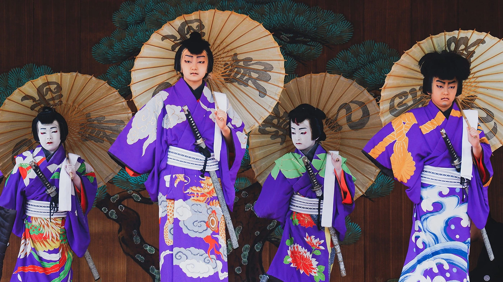
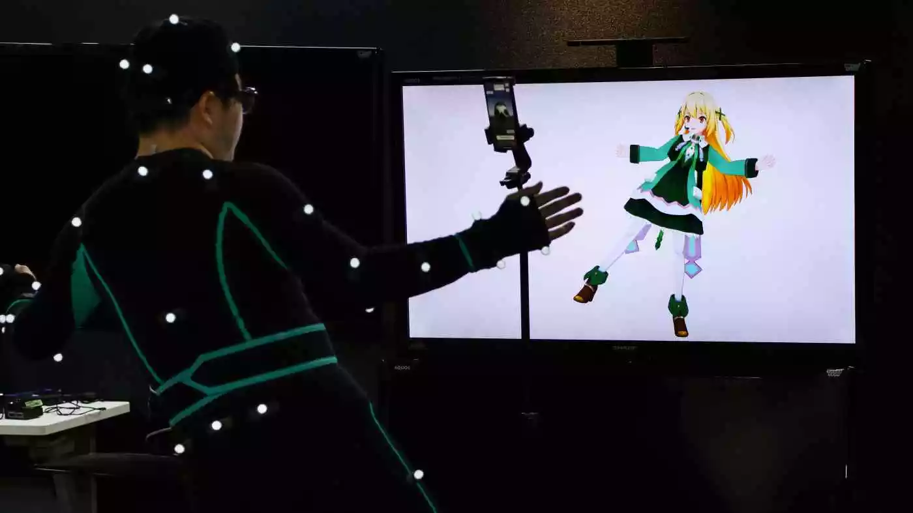

Fear not! This website will provide the necessary information for you to start on your adventure to experience Japanese entertainment both physically and virtually! There is a plethora of Japanese entertainment such as Japanese performing arts. However, Anime, Japanese music, and Vtubers will only be covered on this website!
Anime (アニメ) is basically animation originating from Japan. It can be hand-drawn and/or computer-animated. However, it should not be confused with anime-influenced animation such as anime originating from China. Anime-influenced animation originating outside of Japan would still be considered "anime" in the west but in Japan, it is not.
Photo by Dex Ezekiel on Unsplash
Japanese music or 音楽 (Ongaku) includes a plethora of distinct genres of both traditional and modern. However, I will be covering Anisong, Jpop, and Japanese musicians such as the one you see above who is Hiroyuki Sawano. More information will be covered on their respective web pages!
Photo from Moshi Moshi Nippon
A vtuber basically refers to any fictional character that often livestreams on a regular basis talking or playing games or singing and dancing. It is basically an online entertainer represented by a digital avatar generated by computer graphics or other means. The most famous examples are Hololive, NIJISANJI, and various independent vtubers such as Kizuna Ai.
Photo from Hololive Twitter (ENG)
There are many anime, music, vtubers to choose so you would definitely be overwhelmed by them. However, fret not! This website will help you decide where to start experiencing Japanese entertainment based on the category that you would like to try!
Click the hyperlink above on those three cards to get started or use the navigation bar to navigate to the three main categories (Anime, Japanese Music, Vtubers). You can also take a look at the brief history behind Japan's entertainment industry and some brief introduction videos to anime, Japanese music, and vtubers below.
After the US occupation of Japan in 1952, the American media has deeply influenced Japanese popular culture. Conversely, Japan localised these influences by appropriating and absorbing foreign influences into local media industries instead of being dominated by American products.
Japanese popular cultures include Japanese cinema, cuisine, television programs, anime, manga, video games, music, and doujinshi.
In the past, Japanese entertainment would include watching Japanese TV programs, watching performing arts, listening to radios, watching Japanese idols, and watching early forms of anime. Furthermore, Japanese idols in the past were mostly girls portrayed for their "cuteness" and "innocence". They were instructed to maintain a perfect public image and set a good example for young people.
However, Japanese entertainment has evolved. Anime has gotten even better with its animation techniques and better computer hardware for computer animation. Japanese music is now more modern as you would have expected it because of competition from overseas in the music industry. The idea of Japanese idols and how people should interact with them have changed. Japanese idols can be virtual idols (idols represented by anime avatars) and have a little more freedom than in the past. Additionally, this then affects how fans interact with them such as supporting virtual idols/vtubers with donations on online platforms (E.g. superchats on YouTube). Other than anime, Japanese music, and vtubers which are covered on this website, there are other forms of Japanese entertainment that you can explore too on the internet!
Note: I will only be covering the three main areas in this website; anime, Japanese music (mainly Anisong, original soundtracks, and musicians), and vtubers.
If you are interested, click here if you want to learn more about anime!
Above is a consolidated video of several Japanese music by pringlechan's playlists. Do note that there are more genres out there such as Jpop, kawaii future bass, Anisong, and more. If you are interested, click here to learn more Japanese music!
If you are interested, click here to learn more about vtubers!
I am Jason who goes by the username, "Dratornic" on the internet.
I enjoy playing JRPG games such as the recently released game from Bandai Namco, Scarlet Nexus on my steam account. Additionally, I am weak with horror games but I do enjoy playing phasmophobia as it is not too scary. Furthermore, as you can tell, I am a huge fan of Japanese culture, espeically anime. Below are my latest posts from my Twitter account and my latest video from my YouTube channel.